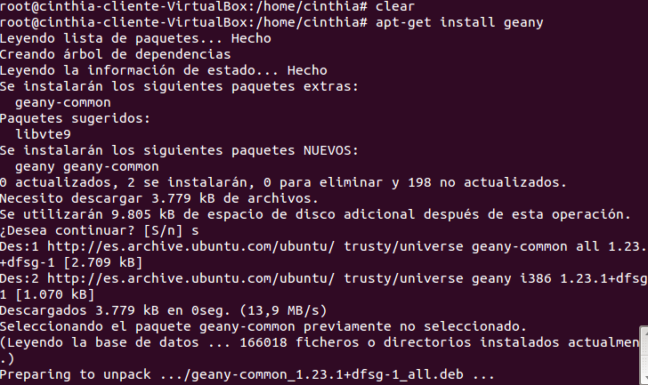

- Módulo: Administración de Sistemas Operativos
- Título del trabajo Acceso remoto SSH
- Componentes del grupo: Cinthia A. Vargas Jiménez
- Curso Académico: 2014/2015
- Fecha de entrega: OCTUBRE de 2014
En la siguiente practica , necesitaremos tres máquinas virtuales
- Un servidor GNU/Linuxcon IP estática (172.16.108.21)
- Un cliente GNU/Linux con IP estática (172.16.108.121)
- Un cliente Windows con IP estática (172.16.108.221)

- Nombre de usuario: nombre-del-alumno
- Clave del usuario: Y1888840W
- Clave del usuario root: Y1888840W
- Nombre de equipo: ssh-server.vargas
- Nombre de dominio: vargas
- Crearemos en ssh-server.vargas , los siguientes usuarios :
- remoteuser1
- remoteuser2
- remoteuser3
- remoteuser4
- En /etc/hosts , añadimos los equipos ssh-client1 y ssh-client2.
- Desde el propio SSH-SERVER, verificar que el servicio está en ejecución: "service ssh status", "/etc/init.d/ssh status", o con "ps -ef|grep ssh"
- Comprobar el funcionamiento de la conexión SSH desde cada cliente usando el usuario remoteuser1. Desde el cliente hacemos "ssh remoteuser1@ssh-server".
- Generar nuevas claves de equipo en SSH-SERVER. Como usuario root ejecutamos en SSH-SERVER: "ssh-keygen -t rsa -f /etc/ssh/ssh_host_rsa_key"
- Comprobar qué sucede al volver a conectarnos desde los clientes, usando el usuario remoteuser2 y remoteuser1. ¿Qué sucede?
- Prompt Bash
- Editamos el fichero de configuración del usuario en la máquina servidor /home/remoteuser1/.bashrc
- Iniciamos sesión con nuestro usuario desde la máquina cliente y ejecutamos "ssh-keygen -t rsa" para generar un nuevo par de claves para el usuario en "/home/nuestro-usuario/.ssh/id_rsa" y "/home/nuestro-usuario/.ssh/id_rsa.pub"
- Ahora vamos a copiar la clave pública (id_rsa.pub) del usuario de la máquina cliente, al fichero "authorized_keys" del usuario remoteuser4 en el servidor. Hacemos "scp .ssh/id_rsa.pub remoteuser4@ssh-server:.ssh/authorized_keys"
Ahora podremos acceder remotamente, sin escribir la clave de acceso.
- SSH como túnel para X
- Instalar en el servidor una aplicación de entorno gráfico que no esté en el cliente."GEANY"

- Desde el servidor, fichero de configuración /etc/ssh/sshd_config (X11Forwarding yes) "mostrar en imagen"
- Comprobar el funcionamiento del GEANY desde cliente GNU/Linux.

- Aplicaciones Windows nativas
- Instalamos "Wine" ,comprobamos el funcionamiento accediento al "notepad" en ssh-server
- Desde cliente
- Restricciones
- TOTAL
- Modificamos el fichero de configuración del servidor SSH (/etc/ssh/sshd_config) para conseguir restringir el acceso a determinados usuarios
- Comprobamos y accedemos , tiene que denegarnos el permiso
- EN LAS MÁQUINAS
- Modificamos los ficheros /etc/hosts.allow y /etc/host.deny, con el fin de que el servidor deniege accesos a todas las máquinas, excepto nuestros clientes
- APLICACIONES
- Crear grupo remoteapps
- Incluimos el usuario 4 al grupo
- Permisos del ejecutable de "GEANY" a 750. Para impedir que los que no pertenezcan al grupo puedan ejecutar el programa.
Cliente GNU/Linux
- Nombre de usuario: cinthia
- Clave del usuario: Y1888840W
- Clave del usuario root: Y1888840W
- Nombre de equipo: ssh-client.vargas
- Nombre de dominio: vargas
- Añadimos en /etc/hosts el equipo ssh-server.vargas, y ssh-client2.
Cliente Windows
- Instalar software cliente SSH en Windows (PuTTY)
- Añadimos en C:\Windows\System32\drivers\etc\hosts el equipo ssh-server y ssh-client1.
- Conexión de Windows , con cliente1 y cliente2 al servidor